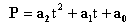
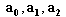
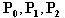
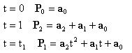
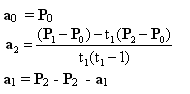

Parametric equations can be used to generate curves that are more general than explicit equations of the form y=f(x). A quadratic parametric spline may be written as

where P is the point we are trying to find,  are three vectors defining the curve and t is the parameter. In order to solve this equation we can specify three points on the curve, labelled ; these are at positions along the curve given by the relevant parameter t. The curve will by convention be from t=0 to t=1, and two of the points we specify are the end points of the curve. By substituting suitable values into the equation we can specify three simultaneous equations thus

and by solving these we can find in terms of :

We can now apply this to any set of three points, as shown in the diagram below. It is easy to see the much higher degree of flexibility achieved through the use of parametric equations, and we will see this exploited with more advanced methods later on.
Figure 3.1 - Parametric Curve (interactive)
Although this method of creating curves is easy to use, it is not immediately clear how these shapes come about. The curve is actually a combination of two quadratic curves, one is y=f(t) and one is x=f(t). By varying t between 0 and 1, x and y will both vary and create the curve. This is shown below; create a curve and animate it to see how the three curves relate.
Figure 3.2 - Detail of Parametric Curve (interactive)